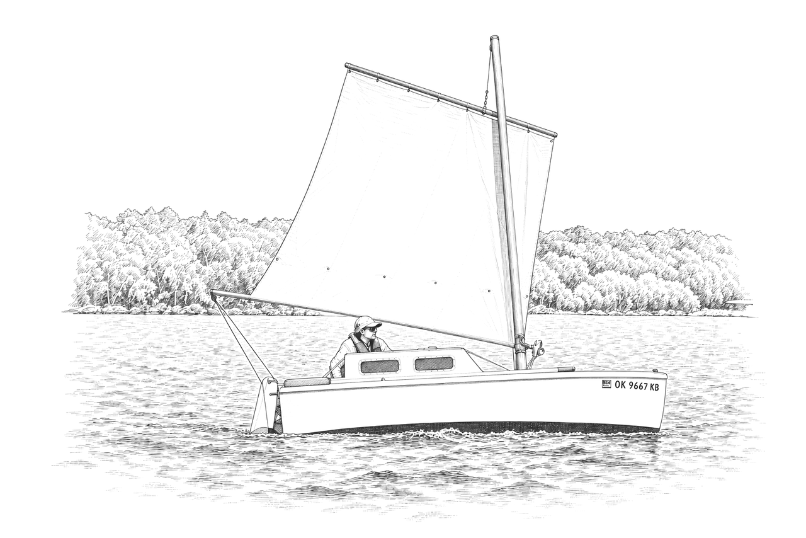

Chapter 11
Mast, rig and sail

I was surprised at the slenderness of the upper part of the spar, but that's exactly where economy of weight is needed, along with flexibility for dissipating sudden loading in gusty conditions.
Bill Serjeant, Bill's Log, "The Mast 6," 19 October 2005
Three lines come to three cleats on the forward bulkhead, and between them they do the sail's whole work: one hauls the boom round to roll the sail up or let it out, one holds the boom up while that happens and one hoists. The rudder answers to a fourth, a continuous loop on four small blocks at the corners of the cabin, worked from the one seat beneath the sliding hatch whichever way the hatch is set.
The mainsheet comes to hand from behind the helmsman, by way of a two-part purchase led through the transom on the offset side of the mast, which looks awkward next to a dinghy's forward-led sheet but is not: the sheet is set once and locked off, and the slack falls into a bin behind the aft bulkhead where it cannot tangle round the sailor's feet.
The sail itself resists a tidy name: part of it sets forward of the mast as on a dipping or balanced lug, but it is never dipped on a tack and its boom never sits forward of the mast the way a true balanced lug's does, and a strict standing lug's tack would fasten at the mast itself, which this one also stops short of. Alastair Law, Little Jim's builder in Yeovil, put the puzzle to the list in 2006; Glen Maxwell called it a balanced lug in spirit, and a third builder, signing himself only "JG," settled it for most readers afterward, close enough to a standing lug to call it one: "whatever works is ok."
A parrel, the strap that normally holds a lugsail's yard against the mast, is missing here by design, so the whole furled rig can be dropped and laid flat along the cabin side without reaching out for anything; the trade-off is that on one tack the yard stands clear of the mast and the geometry is, by the builders' own admission, not very efficient, where on the other the sail presses against the mast and sails a shade better for it. Glen Maxwell posted a photograph to the mailing list in July 2001 that shows just how little the first tack costs: Chris Morejohn at the helm of a Paradox heavily reefed in a 25-knot wind on Exuma Sound, logging about 6 knots, with Layden and Mindy Bolduc sitting below.
The mast sits off the boat's centreline to port, with the sail rigged to its port side as well. Sean Mulligan explained why to a fellow builder in 2013: water working its way in around the mast partners on that side drains overboard before a drop reaches the cabin, and centring the mast would mean redesigning the whole arrangement for a gain nobody has thought worth the trouble; he noticed almost no handling difference between the tacks either way.
Sheeting one in goes against instinct for a sailor used to a sloop: the rule of thumb is to sail her the way a junk rig is sailed, the boom no closer in than square over the corner of the transom and the luff nearly shaking rather than hauled hard home, since pointing too high stalls the sail and sheeting in too hard chokes the wind off the leech. The whole sail should look, as Stephen Yahn put it, simply "standing still" and working, not fluttering.
The mast
Most Paradox masts are built as the plans draw them, a hollow tapered box of close grained Douglas fir with a straight aft face. It simply lifts straight up out of its step and lays down on the rolled sail and boom, rather than folding on a hinged tabernacle the way Little Cruiser's mast does.
A finished mast can weigh as little as 6 kilograms in aluminium, or as much as 14.5 kilograms built oversize from a substitute timber, against a more typical 9 kg in Douglas fir.
The mast carries no stays or shrouds of any kind; wood or metal, it stands unsupported from its step to the masthead. Reducing sail by rolling it onto the drum takes the place of standing rigging, Jack Gardiner pointed out in 2008, and a hull this narrow rolls over in a gust well before the mast could ever take enough load to fail, so the mast is protected by the hull beneath it.
Rainwater draining past the mast through the deck vent can swell the wood enough to jam it solid in its step, as Bill Serjeant, Faith's builder, found more than once; the fix is a step built deliberately loose, with removable wedges, rather than one built to grip.
The yard chafes against the mast too, mostly while sailing reefed, when the yard rides low and the boom's aft end bears on the same spot. A varnished finish once burned clean through a sail's sleeve on Jack Gardiner's boat, leaving an eight-inch hole; he refinished the mast in petroleum jelly and linseed oil instead of varnish and sewed a leather patch onto the sleeve at the wear point. Alastair Law went further and fitted a leather sleeve to the mast itself, and lengthened the gap in the sail's own sleeve so the spar, not the sail's cloth, takes the wear; the chafe has not recurred since. A leather sleeve need not run the mast's full length. A few inches around the spot where the boom rubs while reefed are enough, since a reefed sail rarely rubs the same place twice and almost always on the same tack.
Whether a mast of this kind has ever broken under sail is a question the record answers more carefully than the folklore around it suggests. Stephen Yahn wrote in 2008 that, so far as he knew, "everyone who has used this boat have not broken their mast," and James Hall offered much the same hedge in 2015: "Mine has never broken, yet." Both are honest personal reports, not a survey, and they sit alongside one real exception.
André-François Bourbeau is a retired professor of wilderness survival and adventure tourism from the Saguenay region of Québec. He read the mailing list for two years before buying Stephen Yahn's Paradox sight unseen from more than 5,000 kilometres away in January 2013 and renaming her Iota, and added a second Paradox, Pequeno, in 2015. He designed the free Gorfnik dinghy, built himself an Enigma ketch he named Question and keeps both of his own Paradoxes free of any engine. Fully bilingual, he has long been the bridge for francophone builders joining an English-speaking community.
André-François Bourbeau found Iota's mast slightly cracked two thirds of the way up in 2015. Her halyard pulley had never been set up to the plans' own design, which centres the sheave inside the mast; instead a stainless strap carried the pulley outside the mast altogether, pulling the load off to one side and bending the spar further than the plans ever asked it to bend. André-François Bourbeau concluded the fault was his own departure from the design, not the design itself, and planned his replacement mast strictly to plan. The fair statement is not that no Paradox mast has ever broken, but that none is recorded broken when built and rigged as drawn; the one crack on file came from a pulley the plans do not place there.
Boom, yard and the tack strop
The yard is shaped not to furl cleanly, but to carry its own load without flexing out of shape: a spar needs to be stiffest exactly where it is restrained, which for the yard means where it bears against the mast, so the plans taper it like a seesaw, thickest at the centre of support and thinnest at both free ends. Get that curve wrong, and the sail's own head loses its shape; Nick Bell had a sailmaker cut a sail for Thor assuming a straight, untapered spar and found it crease badly once hoisted on the real, curved one, and remade the yard flat and straight to match rather than unpick the sail.
A tack strop, a short length of rope running through a brass pipe at the mast, fixes nothing more than the boom's height there; it does not set or hold luff tension, which comes instead from the furling line itself. Layden's own instruction for it could not be plainer: "make fast to cleat and forget it." The strut that carries that strop takes compression as well as tension once a reefed sail loads it with the boom's weight and the reefing line's own pull together, so it has to be built stout, in bronze or brass pipe rather than thin tube.
The topping lift
Reducing sail on a Paradox is simple in principle and, as drawn, awkward enough in practice that the fix for it became the rig's first shared discovery. Glen Maxwell met the problem in earnest on a shakedown cruise from Cedar Key toward Honeymoon Island, sailing Zoë, in December 2001. The fitting at the boom's end was not stiff enough: it bent inward as the sail rolled up and periodically furled the mainsheet round the sail itself, locking the whole rig, usually discovered only once the tangle was already made, since a sailor's attention at that moment is on the sail going up, not on the boom. A topping lift rigged temporarily at the cruise's midpoint layover cured it at once, and a permanent one went onto the list of changes before the next trip. Operating the stock gear as drawn, without one, genuinely needs three hands: one to ease the halyard, one to haul in the furling line and one to hold the boom up so it does not drop. At least five builders, in different countries and different decades, met that same difficulty on their own and reached for the identical cure without ever comparing notes first: a topping lift from the boom's end to the masthead, carrying the boom's weight while the other two lines do their work. Once fitted, raising and lowering sail stopped being a chore on every boat that tried it.
Layden himself needs none of it. Seen at the Cedar Key gathering in 2003, he puts pressure on the furling line with his foot while hoisting, and on the halyard with his foot while furling, which frees both hands for whichever line is actually moving. Glen Maxwell, who watched him do it, wrote to the mailing list that week that Layden "really makes it look easy, worth a try." He reefs and furls faster than anyone who has tried to keep pace with him, and can shorten sail running downwind in 20 to 25 knots, a point where most other sailors of the same boat have to head up into the wind first.
A topping lift earns its keep, but it is not free of trouble. André-François Bourbeau's reefing jammed solid in just that way on Lake Amistad, Texas, in January 2014: the topping lift wound round the sail as he tried to take in a reef and pulled the sheet in with it, and he lost his steering as the gusts built, ending the day by beaching Ironsides and riding out the blow at anchor. Alastair Law, answering him, reported the identical tangle going one step further on an early outing of his own: knocked down, with water coming in where the hatch was not quite shut, "the boat shrugged it off however and carried on as if nothing had happened." He judged that a conventional open dinghy caught the same way would likely have cost him a real swim and perhaps the boat; as it was, he got his sleeve wet. The fix that followed on both boats was mechanical rather than cautionary: spacing the boom-end fitting further out from the boom's tip, and setting the topping lift's own attachment point as high as it will go, so the pull on the boom runs close to vertical instead of at an angle that can snag the sheet.
A further refinement came from the same habit of tinkering rather than from the plans themselves. Short of room for loose rope in a cabin barely six feet long, Alastair Law spliced the halyard and the furling line into opposite ends of a single length of rope, so the furling line pays back out as the halyard comes in, leaving only a few feet of slack loop in the cabin rather than two separate lines' worth. The only real cost is that the halyard can no longer be let go on its own to drop the whole sail over the side in an emergency, a sacrifice judged acceptable by builders who were never convinced that dumping all that sail into the water would be a good idea in an emergency anyway.
Three sails
The sail the plans describe is about 100 square feet, 9.3 square metres by Layden's own figure, its tack angle close enough to 90 degrees that it rolls up almost on top of itself when furled. It served the design for a decade before the designer touched it again.
The same message that broke his long silence on the list, on 8 May 2003, was also a sailmaking document, the fullest the design has ever had from him. He had cut a new sail for his own Paradox that February, shortening the foot to reduce how far the boom overhung the stern and raising the peak a little for a higher aspect ratio. The cost of the change was a small loss of tidiness: a triangle of cloth at the peak no longer rolled up with the rest and had to be scrunched by hand and stuffed under the boom each time the sail was stowed. The gain, in his own words, was "a slightly better setting and more weatherly sail, either full sail or reefed." He gave the full dimensions for anyone who wanted to cut the same sail, foot 3,180 millimetres, tack to peak 4,150, and weighed the two sails against each other as plainly as he weighed everything else: "I still stand by the [old] sail as in the plans, it works fine and if you have one that is well cut there is no need to change it, but I would go with the new version again if making another."
That taller, higher-peaked cut became the sail most builders now mean when they talk about an upgrade, generally called the Mk2. Its tack angle runs close to 95 or 96 degrees against the original's 90 or 91, measured independently by more than one owner and by Layden's own sail calculator alike, and the wider angle turned out to be deliberate rather than an accident of the new dimensions: asked directly, Layden confirmed he had widened it on purpose to keep the sail snugged against the furling drum as it rolled, since without that margin the sail works its way aft along the boom with each successive reef and spoils both balance and set. The taller sail earns its better pointing honestly, but it asks something back in return. Alastair Law, who has sailed a well-cut Mk1 and a Mk2 cut the same year side by side, found the older sail comfortable under full sail well into a Force 5, where the newer one wanted reefing already by the bottom of a Force 4. Nobody on the mailing list has published a side-by-side measurement that settles the question either way; the choice between the two still comes down to where a particular owner sails and how much he minds reefing a little sooner.
Cutting any of these sails well depends on a lesson the builders learned the hard way and now pass on as routine: measure the yard's actual bend before cutting the cloth, not after. A sailmaker who assumes the yard stays straight under load delivers a sail too slack at the luff and leech once it is actually hoisted; Glen Maxwell lost the better part of a sail's own cost to exactly that mistake, nearly $500, before Dabbler cut a correctly measured replacement. The method builders now hand to their sailmakers is plain enough to do at home: support the yard on sawhorses, hang a weight at its centre and measure the gap between the bowed spar and a string pulled taut between its ends at the quarter, half and three-quarter points, then pass those three figures on rather than a guessed curve.
A third sail followed in 2023, and this one was not Layden's own work. Michael Storer of Really Simple Sails drew it for Mark Brothers, the New South Wales sailor who bought Thor from Nickolas Bell, who had built and sailed her in South Australia for several years, and renamed her Pamela B. Brothers had found his boat "a bit 'sticky' in lighter wind," and made the case for more cloth from the rig's own strength: because the rolling boom reefs so effectively, a Paradox can carry more sail than the plans give her and simply roll the surplus away when the wind arrives. Storer's answer was about 15 percent more area than the original, with a higher-peaked yard for the extra lift to windward, and he held the sail's centre exactly where the original's had been, so the change retrofits to most existing boats on three small spar changes alone: the yard lengthened by 100 millimetres, the boom by 50 and the mast by 150 at its base, with no diameter changed anywhere. Brothers reported the difference as more than cosmetic: with the new sail set, his boat "feels more like a dinghy rather than being stuck in the water in light wind like a yacht."
Lightning at the masthead
The rod at the masthead is not a lightning rod in the sense most sailors mean the term. A true lightning rod invites a strike and carries it safely to the water; the plans' own fitting is a de-ionisation rod, meant to discharge the ions in the air directly above its own tip so thoroughly that no charged path is left for a strike to follow down to the boat at all, reaching out in a cone of roughly 20 degrees all round the mast. Glen Maxwell fitted the same system to his own catamaran and sailed years out of Jacksonville, a city he called the lightning capital of the country, without a single strike. When the grounding skegs were accidentally sealed over in epoxy at a haul out, his radio failed at sea for no obvious reason, then a replacement radio and a CD player failed the same silent way, before he traced the fault to the broken ground and scraped the epoxy away to restore it. The grounding plate itself is a sheet of copper roofing flashing left exposed at the hull's outer surface, which doubles as an antifoulant, so a Paradox fitted this way needs no separate bottom paint over the plate at all. The rod need not even be the bronze the plans call for; marine grade aluminium does the same job. Not every builder fits the system. Owners sailing outside genuinely lightning prone water, from England's south coast to tropical Thailand, have left it off and found no cause to regret the choice.
Rig alternatives
Three owners have tried something other than the standing lug. Rob Kellock, who built Mini in New Zealand, sailed the stock rig for four months before deciding to test an alternative properly rather than simply complain about one. He cut a four-sided sprit sail of about 102 square feet, sized to match the standing lug's own centre of effort, and sailed the two rigs side by side for months rather than switching outright on a hunch. What finally decided him was a single bad afternoon: an uncontrolled "Chinese gybe," the standing lug's sail snapping across to the wrong side of the mast while running, left the boat drifting toward rocks with no option but to climb out onto the foredeck mid-sail and sort the tangle out by hand. He adopted the sprit rig outright in 2018 and never went back. A systematic comparison that followed found the sprit faster on every point of sail, most markedly to windward in light air, with reliable tacking in all conditions and no risk of the gybe that had nearly put him on the rocks. The lug kept one advantage even so: reefed hard down in genuinely strong wind, a standing lug with its yard pressed against the mast still makes some progress to windward on one tack, where a sprit eased right off to spill wind, what sailors call scandalising it, has by the same point already fallen back to a beam reach. The sprit trades a graduated roller reef for three fixed states, full, scandalised and struck, and swaps the lug's two control lines for four, a real cost in a small cabin already short of room for rope.
Not every sprit sailor makes the same trade on a Paradox. André-François Bourbeau sails other boats rigged with sprits and rates them highly for their simplicity and their freedom from the standing lug's own boom accidents; his own Iota, the boat whose masthead pulley cracked her mast, is not one of them. He keeps the standing lug there specifically for the roller furling's own virtue, which he put to the list in one sentence: it gives "perfect and instantaneous reefing in any situation." Between them, Rob Kellock and André-François Bourbeau state the whole trade as plainly as it can be stated: better sailing, for more lines and a coarser reef, or a plainer rig that reefs itself in a gust without the sailor doing anything but ease a line.
Two owners have gone further still and fitted a junk rig, a sail cut in horizontal panels each controlled by its own light batten, trading the lug's single large area for many small ones under far lower individual load. Roselt Croeser, a Perth builder, converted his own stock-lug Paradox, Planktos, to junk rig between 2013 and 2016, keeping the mast exactly where the plans put it and sheeting each batten to its own point rather than to one mainsheet. He cruised her to Shark Bay and reported the rig easy and quick to reef, with good control of the sail's twist and cheap, light fittings, and the Junk Rig Association later named her its boat of the month.
Eerik Mee, an Estonian who built a Paradox enlarged by a fifth, answers the question Croeser's account leaves open, of how a junk sail can balance against a hull whose own centre of effort sits so far aft: because his junk rig was designed into THU from scratch rather than retrofitted to a stock hull, he moved the mast forward to balance the new sail, and the chine runners had to move forward with it. Even so, the balance was not fully solved on the water. The boom twisted too much under sheet, and one tack showed a noticeable lee helm that he corrected only by adding water ballast forward and tightening the tack parrel to pull the centre of effort back. What never gave him trouble was the one thing the whole community had worried a junk rig would ruin: Paradox is normally awkward to tack, and THU tacked without any of the usual tricks, "and it was a success. As were all next tackings."